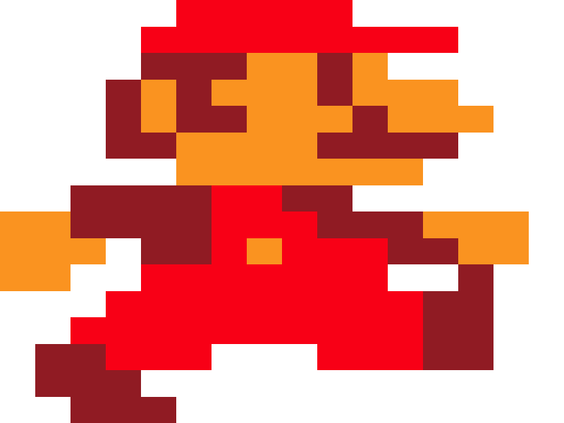
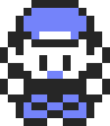

remotes::install_github("matt-dray/pixeltrix") # v0.1.2 in this post
library(pixeltrix)
tl;dr
I’ve updated the {pixeltrix} package so you can create animated sprite gifs with a simple, interactive pixel editor from within R’s plot window.
Pix all the right boxes
The {pixeltrix} package—which I’ve written about before—lets you open an interactive R plot that you can click to turn ‘pixels’ on and off.
I created it for one purpose: to quickly create simple, blocky sprites for my {tamRgo} package, which lets you keep a persistent cyberpet on your computer (yes, really).
But wouldn’t it be nice if {pixeltrix} were more… general? Read on for a couple of improvements to the package that might help.
Note
The package has been updated again since this post. From version 0.2 you:
- can provide colours as input to
click_pixels()andframe_pixels() - receive a
coloursattribute with the output matrices, which encodes the state and colour values
Pixellate to accumulate
First, you can install the updated package from GitHub:
Now the improvements: plotting with colour, and creating gif animations.
1. Plot
The click_pixel() function opens an interactive plot. If n_state = 3, for example, then each pixel will cycle through three states as you keep clicking it. You’re returned a matrix of these values when you hit Esc.
That was enough for {tamRgo}: I turned a binary matrix into a 1-bit sprite. But wouldn’t it be good—fundamental!—to be able to plot the matrix as an image with user-specified colours? So I made draw_pixels().
I’ve added a three-state matrix, blue, into the package as an example dataset. Let’s plot it with simple colours:
draw_pixels(
m = pixeltrix::blue,
colours = c("white", "#879afb", "gray20")
)
Of course, it’s the subtly-coloured player character from Pokémon Blue (1996) as seen on the Nintendo Game Boy Color.
2. Animate
Naturally, you could use click_pixels() and draw_pixels() to generate several images and combine them as ‘frames’ of an animation. Why not have a function that does this automatically?
So that’s what I did:
frame_pixels()callsclick_pixels()and adds the output as the first element of a list, then it passes that matrix intoedit_pixels()as the template for the next frame (and so on until you choose to stop making frames)gif_pixels()takes the list of matrices created byframe_pixels()and draws, combines and writes them to a gif
I’ve prepared pixeltrix::mario as an example of an output from frame_pixels(). It contains each of three frames that comprise Mario’s walk cycle from Super Mario Bros on the NES.
Here’s what the console output looked like when I made mario:
mario <- frame_pixels(
n_rows = 16,
n_cols = 16,
n_states = 4 # background + 3 colours
)Click squares in the plot window. Press <Esc> to end.
Add a frame? y/n: y
Click squares in the plot window. Press <Esc> to end.
Current frame count: 2
Add a frame? y/n: y
Click squares in the plot window. Press <Esc> to end.
Current frame count: 3
Add a frame? y/n: n
Final frame count: 3You can see there’s interactivity; the user is prompted to add another frame with Add a frame? y/n:, where y will let you create a new frame and n will stop the process and return the list of matrices.
And so you can see it’s a list of three matrices:
str(mario)List of 3
$ : int [1:16, 1:16] 0 0 0 0 0 0 0 0 1 1 ...
$ : int [1:16, 1:16] 0 0 0 0 0 0 0 0 0 0 ...
$ : int [1:16, 1:16] 0 0 0 0 0 0 0 0 0 0 ...You can then convert the list to a gif with gif_pixels(), which engifs the frames using {gifski}.1
gif_pixels(
frames = mario,
colours = c(
"white", # background
"#FDA428", # skin (yellowish)
"#FC0D1B", # overalls/hat (red)
"#A32B2E" # hair, eyes, shirt, boots (brown)
),
file = "mario.gif",
delay = 0.15 # passed via dots to gifski::save_gif()
)Inserting image 3 at 0.30s (100%)...
Encoding to gif... done!
[1] "mario.gif"And if we open that file:
Yahoooooo, created entirely with R. Noice.
Pix n mix
So {pixeltrix} finally got a couple of nice-to-have (well, must-have) functions. This is enough for me to continue just messing around with it as a novelty2.
I mean, come on: animated pixelart created in an interactive R plot window? Why? I mean, er… wow!
Environment
Session info
Last rendered: 2023-07-17 18:10:37 BSTR version 4.3.1 (2023-06-16)
Platform: aarch64-apple-darwin20 (64-bit)
Running under: macOS Ventura 13.2.1
Matrix products: default
BLAS: /Library/Frameworks/R.framework/Versions/4.3-arm64/Resources/lib/libRblas.0.dylib
LAPACK: /Library/Frameworks/R.framework/Versions/4.3-arm64/Resources/lib/libRlapack.dylib; LAPACK version 3.11.0
locale:
[1] en_US.UTF-8/en_US.UTF-8/en_US.UTF-8/C/en_US.UTF-8/en_US.UTF-8
time zone: Europe/London
tzcode source: internal
attached base packages:
[1] stats graphics grDevices utils datasets methods base
other attached packages:
[1] pixeltrix_0.2.1.9000
loaded via a namespace (and not attached):
[1] htmlwidgets_1.6.2 compiler_4.3.1 fastmap_1.1.1 cli_3.6.1
[5] tools_4.3.1 htmltools_0.5.5 rstudioapi_0.15.0 yaml_2.3.7
[9] rmarkdown_2.23 knitr_1.43.1 jsonlite_1.8.7 xfun_0.39
[13] digest_0.6.31 rlang_1.1.1 fontawesome_0.5.1 evaluate_0.21 Reuse
CC BY-NC-SA 4.0